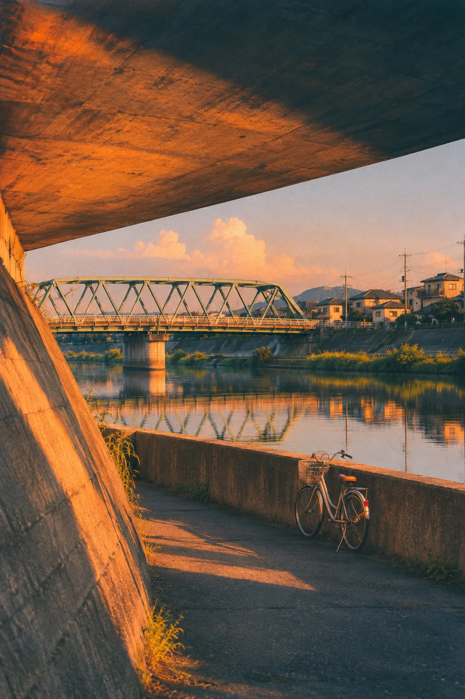

試し読み 橋脚のそばで待ち合わせ
夕方の橋の下は、まだ昼の温度が残っていた。風の通り道を探して一段降りると、靴先からすっと冷えていく。川を渡りきるまで気づかなかった音が、手すりの向こうでひとつずつ聞こえた。
低地編集室
川のそばでつくる、年二回の雑誌
2026年 秋冬号
川の向こうへ急ぐ日にも、ふと立ち止まる場所がある。橋脚の影から、街の日々を眺める一冊です。

橋の下の生活夕方の橋の下は、まだ昼の温度が残っていた。風の通り道を探して一段降りると、靴先からすっと冷えていく。川を渡りきるまで気づかなかった音が、手すりの向こうでひとつずつ聞こえた。